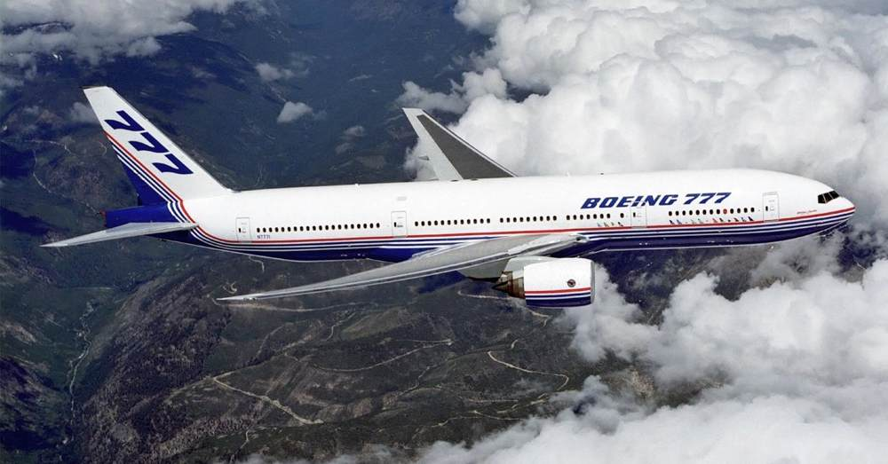

Mitos y realidades
Contrastamos creencias comunes sobre turbulencia, motores, rayos, puertas y automatización con evidencia técnica.
Más allá del vuelo / Blog académico
Comprender cómo se protege un vuelo, desde las decisiones de las personas hasta los sistemas de la aeronave.
Nuestro propósito
Este blog busca acercar la seguridad aérea a la comunidad estudiantil mediante información clara, análisis crítico y fuentes científicas e institucionales. Queremos explicar cómo se identifican los riesgos, qué protecciones existen y por qué aprender de la experiencia permite mejorar la aviación.

Los temas que abordamos
Contrastamos creencias comunes sobre turbulencia, motores, rayos, puertas y automatización con evidencia técnica.
Explicamos qué conservan el FDR y el CVR y cómo sus registros ayudan a investigar y aprender de los sucesos.
Analizamos por qué los objetos extraños pueden representar un peligro y cómo se previenen, detectan y retiran.
Exploramos la relación entre personas, tecnología, comunicación y organización en la seguridad del vuelo.